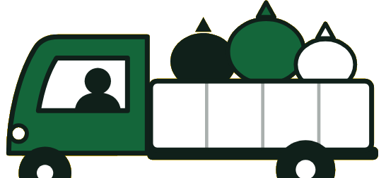

NITDA INNOVATION CHALLENGE 2.0
TRASHAWAY
Book a waste pickup. Track it until it’s collected. In your own language.
Team DreamRise

THE PROBLEM
Most of Nigeria’s waste has no formal pickup
of Nigeria’s waste is collected through a formal system
of solid waste generated in Nigeria every year
from floods in 34 states in 2024; 740,743 displaced
Sources: National Policy on Solid Waste Management (2020); Africa Check; National Economic Council (2024)
WHO IT FAILS
Three groups lose out today
Residents
No reliable way to book a pickup, and most services work only in English.
Collectors
Informal collectors have no steady way to find jobs or build trust with households.
Councils
Little data on where waste builds up or where illegal dumping happens.
“There used to be garbage trucks that came by twice a week, but now we barely see them.”
Ifeanyi, resident of Arab Road, Kubwa, Abuja · Africa Housing News, 12 Nov 2024
THE CHALLENGE WE WERE SET
“How can technology be used to improve waste collection efficiency, reduce environmental pollution, and create a more reliable and accessible waste management system across Nigeria?”
Key challenge question, TRASHAWAY challenge page, NITDA Innovation Challenge 2.0
THE SOLUTION AND HOW IT WORKS
One platform. Three sides. Five languages.
Residents book and track
Book a pickup, track it to the door, and get paid per kg for recyclables.
Collectors find jobs
Accept general-waste jobs nearby on a phone and earn steady income.
Councils see everything
A dumping hot spot map, plus how much waste was kept out of landfill.
TRASHAWAY platform
SORTY AI · LANGUAGES
Ask in your language. Sorty answers in it.
Plastic water bottles: reuse, and why not to burn them.
What recycling does for the environment.
Plastic bottles and old papers, then booking a pickup.
A Maltina can, and how to book a pickup.
LIVE DEMO
Book a pickup by chatting with the AI assistant
- 1A quick look at the dashboardWhere a resident sees their requests and their status.
- 2Ask in your languageChat with the assistant in Pidgin, Hausa, Igbo, Yoruba or English.
- 3The assistant sorts and draftsIt lists each item, such as plastic or e-waste, and suggests a time.
- 4Confirm with a tapNothing books until the resident confirms. A collector then accepts and the resident tracks the pickup.
SORTY AI · THE TECHNOLOGY
How Sorty AI works
Chat assistant
Gemini 3.5 Flash-LiteAll data from our own backendAnswers sorting questions from a 25-entry knowledge base. It has four tools: sorting advice, propose a pickup, check a pickup and propose a cancel.
Photo check
Gemini 3.8 FlashAll data from our own backendReads a photo and returns the waste type, hazardous or not, recyclable or not, and a tip. Batteries and e-waste are always marked hazardous. The same photo reuses its saved answer.
Guide and help desk
Same models, fewer powersAll data from our own backendThe website guide has no tools and cannot see any account. The help desk reads only the person’s own records and hands the ticket to an admin when it is stuck.
Built-in guardrails
CYBERSECURITY AND DIGITAL TRUST
Would you open your gate to a stranger?
SIGN IN
A one-time code to sign in. Sessions end after 7 days.
BOOK
The assistant drafts. Nothing books until you tap.
MATCH
Only admin-approved collectors see jobs.
VISIT
Your phone shows only after a collector accepts.
AFTER
Every pickup is rated, so trust is earned.
SUSTAINABILITY AND ROLLOUT
How it pays for itself and grows
Revenue
- Small booking fee or collector subscription
- Dashboard licence for councils and state waste agencies
- Recycler commission on every kg of sorted plastic and metal bought
Running cost: about ₦35,000 a month in the pilot (hosting, AI assistant, email, domain)
Rollout
FUTURE SCOPE
Where TRASHAWAY goes next
Smart bins
Fill-level sensors on shared bins book a pickup at about 80% full. Later, two compartments split recycling from waste.
Recycler marketplace
Recyclers pay residents per kg in cash, airtime or points. Councils see tonnes kept out of landfill.
Smarter routes
Collectors get a route plan built from booked pickups and full bins, so trucks drive less.
Voice-first Sorty
Book and track a pickup by talking to Sorty in any of the five languages, hands free.
In-app payments
Pay the collector by card or transfer in the app, with receipts, and faster cash-outs for points.
Dumping forecasts
Councils see where dumping is likely next and send clean-up crews there first.
THE TEAM AND OUR ASK
Help us take TRASHAWAY from one ward to every city
Practical today. Scalable tomorrow. Impactful for every street.
DreamRise
- Liman Saadat Ahmed
- Nasir Musa Imam
- Fatima Babagana
- Ibrahim Muazzam Yahaya
- Nasir Mohammed Bala